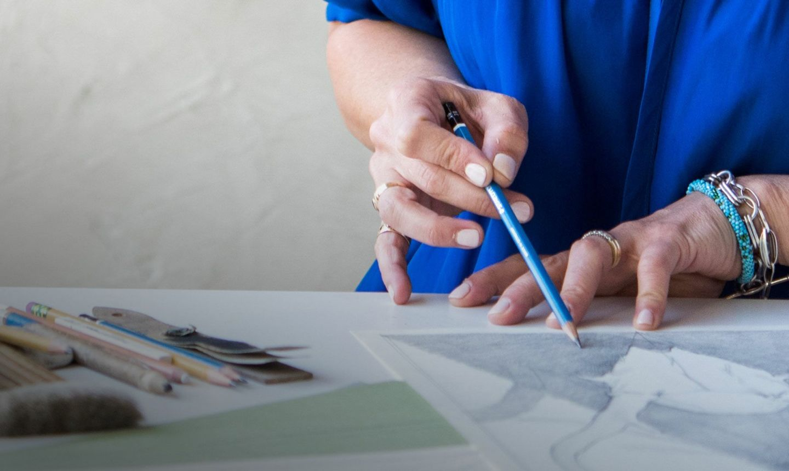
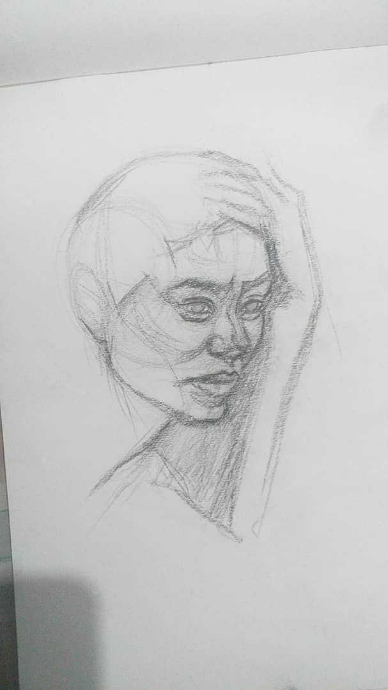
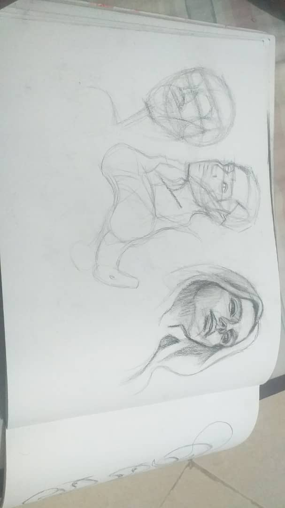
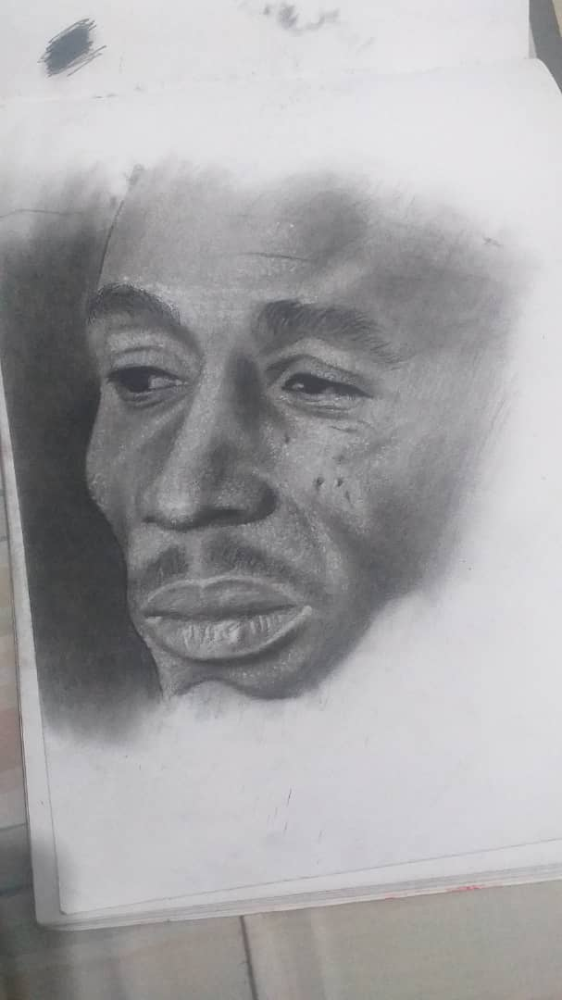
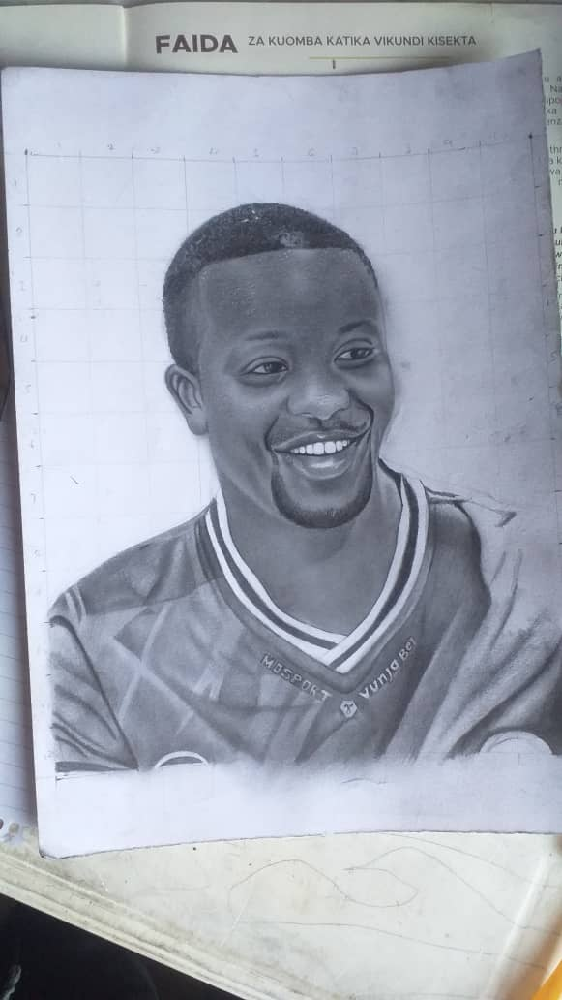

Drawing With Pencils
Drawing with pencil is an art form that you can jump into at any age.
It requires very few supplies and — honestly! — isn’t hard to learn.
In fact, if you know how to hold and use a pencil (check!), you already have the basic
graphite skills needed to start working with this versatile medium.
Our beginner’s guide to drawing with pencil can help you with the rest.
Skeptical? Try the quickie sketching tutorial below. You’ll be amazed at how easy it is to make your first pencil drawing of a simple object.
And once you master these basics, you’ll have the skills (and confidence) to move
on to more complex subjects. Get ready to make your mark!

Drawing with Pencil in Four Easy Steps
Apply the basics of this tutorial in all your drawing endeavors:
- Choose a Reference Image
- Make an Outline
- Add Tones and Textures
- Refine Your Drawing
Donut with sprinkles
Donut with sprinkles If you’re just getting started, a photograph is a great reference choice because it won’t move or change on you as you work.
Go with something basic like a flower or simple object. In this example,
we’ll use a donut
Penciled sketch outline of a donut
Draw the basic shape of your object, but don’t worry about realism here. It’s okay to take some liberties.
Sketch of a donut
Once you’re happy with your basic sketch, you can start filling in and refining your drawing.
Evaluate your reference image for distinct textures to convey in your drawing. In the case of the donut, the “cake” part has
a slightly uneven texture.
You could start by filling in that area using small light circular motions (known as scumbling). To add some definition, darken the scumbling around the edges or add hatching (linear lines) or cross-hatching
(crisscrossing lines) to portions of the radius of the donut that correspond with the darker portions of the reference image.
Drawing a donut with sprinkles
Finesse your drawing by using various pencil marks to shade and highlight certain areas.
Using a variety of tones will suggest color even in a black-and-white piece.
Start slow (you can always make an image darker,
but making it lighter is more difficult) and pause every now and again to look at your image from a distance.
It will help you determine what areas need more shading. You can take the drawing as far as you’d like from this
point, working it into a highly detailed work or leaving it more loose.
Follow your intuition and make the drawing your own!
Some Pencil ArtWorks
   